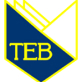

Техникумы в Польше
Техникумы в Польше
Показ всех 9 элементов
Агротехнический Техникум в Радоме
Специальности:
- Альтернативные источники энергии
- Ветеринария
- Механик сельхозмашин и агротроник
- Ландшафний дизайн
- Организация питания, гастрономические услуги

Механический техникум им. Клиберга в Демблине
Специальности:
- Информатика
- Авиационный механик
- Механик
- Электрик
- Техник инженерных сооружений на железной дороге (под патронатом польской железной дороги)